深度社区 · 开源项目
新一代 Wayland 桌面合成器
流畅 · 现代 · 安全的 Linux 桌面体验
项目介绍 · 2026 年 9 月
是什么 · 为什么 · 亮点在哪
窗口 · 手势 · 分屏 · 锁屏
从一个人的坚守到满编归来
2026.5 的关键转折 · 5–7 月成绩单
8 – 12 月产品与质量计划
github.com/linuxdeepin/treeland
深度社区自主研发的新一代 Wayland 桌面合成器。
它是整个桌面环境的“地基”：你看到的每一个窗口、每一段动画、每一次切换，都由它来绘制和调度。Treeland 为 DDE 桌面提供流畅、现代、安全的图形底座。
流畅细腻的窗口动效
工作区与多任务视图
不同屏幕独立缩放
崩溃恢复 · 权限可控
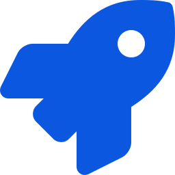
应用快速启动常用应用即点即开
平滑承接 X11 应用
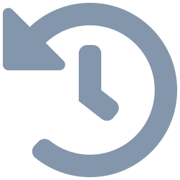
X11 · 过去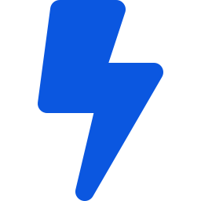
Wayland · 未来Treeland 从第一天起就选择 Wayland，为未来十年的桌面体验打底。
从登录界面到桌面一气呵成，切换用户动画不中断。
支持多用户同时使用，一人一席，互不干扰。
不同分辨率也能复制模式，各屏独立缩放与旋转。
合成器异常自动拉起，桌面不黑屏、应用不丢失。
常用应用秒开，启动动画细腻不拖沓。
基于 Qt 生态，一份代码适配多种渲染方式。
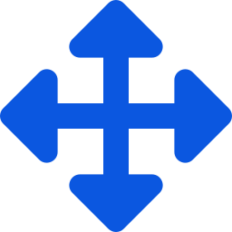
窗口内容拖拽18s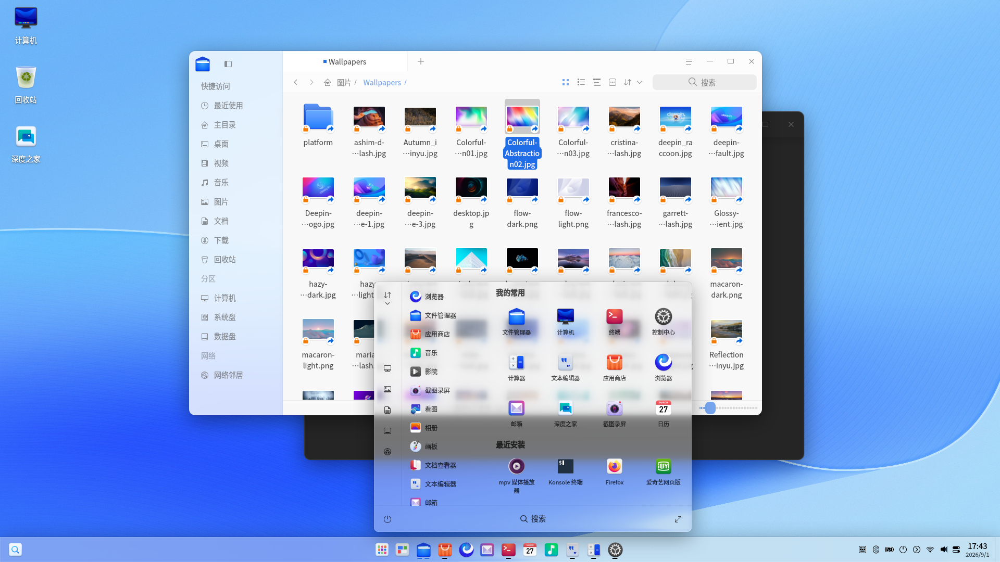
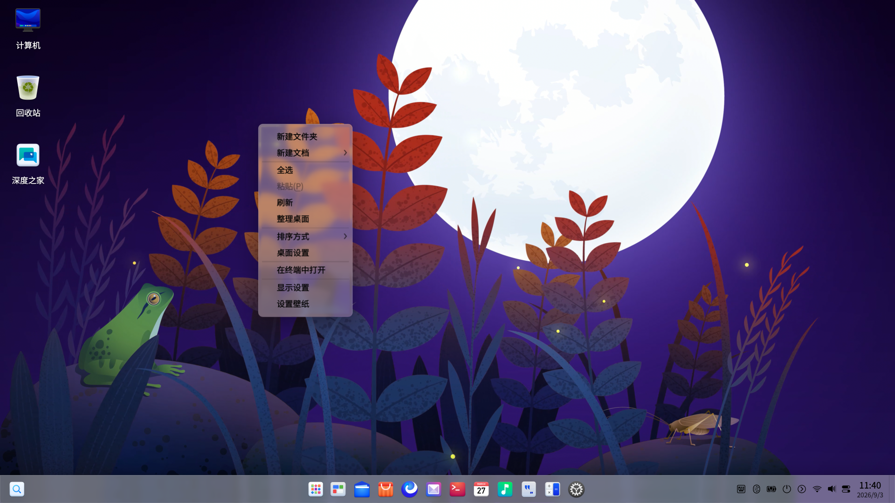
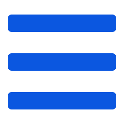
液态玻璃 · 右键菜单双击放大写 Demo、做测试、踩坑，半年验证可行性
6 月投入 7 人，全速开发
团队整体转岗，项目按下暂停键
1 名开发者坚守，独立推进功能与优化
新增 4 人，冲刺 DDE 适配整合
持续补充，团队重回 7 人
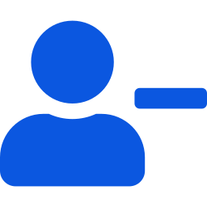
7 → 02024 年底，7 名开发者因公司调整全部转岗，项目停摆。
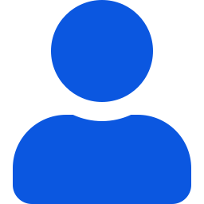
0 → 12025 年底，一位充满热情的开发者独自归队，重新点燃项目。
2026 年 5 月人力补齐，团队持续补充，重回 7 人满编。
“一个人的坚守，等来了整个团队的归来。”
此前 Treeland 一直是独立项目；2026 年 5 月起，正式开启与 DDE 桌面环境的适配整合 ——
对齐截图录屏方案，梳理 DDE 依赖协议，wine 适配协议提测
完成自定义协议重构，DDE 快捷键适配启动，wine 开始提测
常见崩溃清零，适配协议全部就绪，控制中心关键模块完成适配
启动动画、多任务视图、窗口切换等问题清零，需求全部提测
攻坚多屏 1/2 级问题，桌面组件全部集成
消除稳定性崩溃，替代应用无严重问题
常见崩溃问题全部解决，达成“无稳定崩溃”目标
控制中心、快捷键、桌面组件等关键模块完成适配
自定义协议重构落地，适配所需协议全部实现
wine 应用适配提测，Xwayland 常见问题修复
测试体系、底层升级与体验打磨并进
自动化协议测试落地，覆盖率冲刺 100%。
升级 wlroots 0.20，精简旧封装，架构更轻更稳。
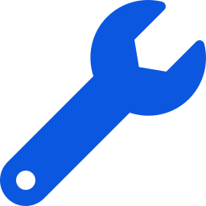
Xwayland 兼容修复QQ音乐、WPS、东方财富等应用问题逐个击破。
拖拽或快捷键触发，窗口对半排布动画。
自研截图录屏落地，修复 OBS 窗口录制。
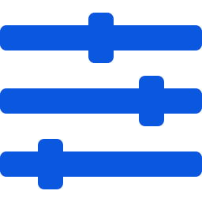
体验细节优化阻塞提醒窗口、任务栏拖动更流畅。
用 AI 守护质量，把桌面连接到远方
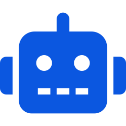
AI 自动化测试AI Agent 驱动 GUI 测试，覆盖高频桌面场景。
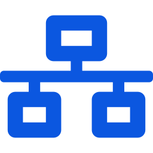
远程桌面支持 Portal 远程桌面与 RDP 协议适配。
白屏、黑屏、缩放等遗留问题全部清零。
登录界面支持自动登录与免密登录。
Space 预览、Dock 预览与提示动画优化。
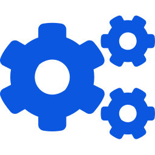
协议整改协议职责更清晰，携手应用厂商完成适配。
更快、更省电，也更懂多人协作
只重绘变化区域，更流畅也更省电。
窗口、阴影、圆角等动画可自由开关。
多用户切换、多席位协同、会话隔离。
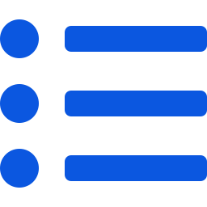
Dock 动画预览与提示切换动画，超宽时变列表。
完成全部整改，提供适配仓库给应用。
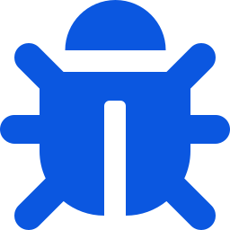
缺陷持续收敛2 级缺陷解决率冲刺 20%。
缺陷逐月收敛，年底交出一份“稳”的答卷。
9 月起，2 级缺陷解决率从 10% 一路冲到 90%，3 级缺陷年底达成 80% —— 让每一次点击、每一次切换都稳定可靠。
感谢观看 · 欢迎加入 Treeland 共建
github.com/linuxdeepin/treeland